Hi all,
Recently there has been a few blogs I've created on different ways to showcase soccer pitch co-ordinate data. This blog will be no exception, however we will just use the one tool today - Alteryx!
Our region at work sat down to complete a weekly Alteryx challenge as part of our learning and development sessions, this time hosted by Faris.
The challenge chosen was 346, and 347. The idea is to Map Messi and Ronaldo's Goals, using the input provided.
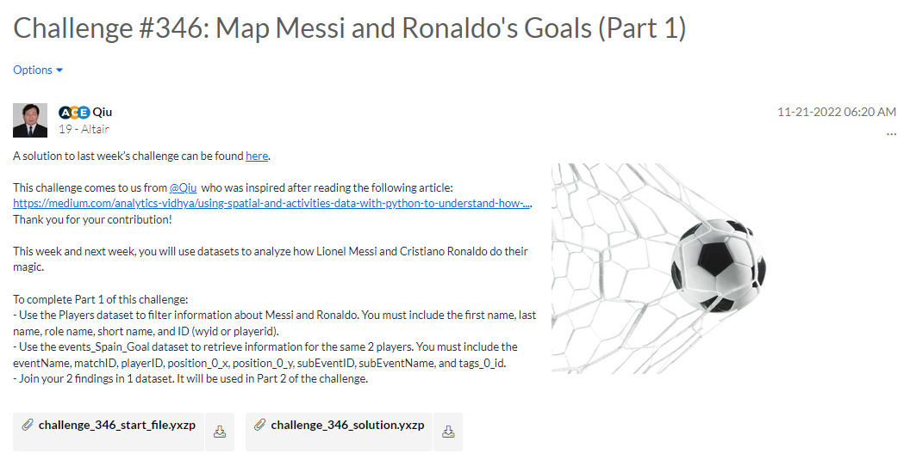
Todays blog will be a run through of how we got on as a group, and also where you could start applying this logic to the understat datasets from previous blogs!
To complete Part 1 of this challenge, we need to:
- Use the Players dataset to filter information about Messi and Ronaldo. Include the first name, last name, role name, short name, and ID (wyid or playerid).
- Use the Events_Spain_Goal dataset to retrieve information for the same 2 players. You must include the eventName, matchID, playerID, position_0_x, position_0_y, subEventID, subEventName, and tags_0_id.
- Join your 2 findings in 1 dataset. It will be used in Part 2 of the challenge.
So lets have a look like what that looks like in terms of the data prep of the flow.
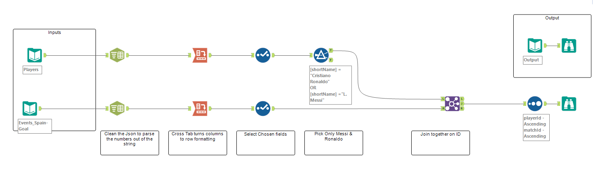
The first part to the challenge is a little more simple. You can find the solution to the flow in the GitHub repository. We parse out the values within the Json, convert them from columns to rows and then select the fields and limit to just Messi & Ronaldo - finally joining the two data streams together to build our final output.
The final output for this part of the challenge includes the X & Y co-ordinates of the shot locations.
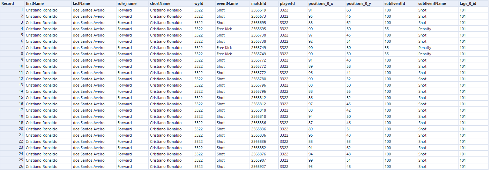
Above is what that data structure looks like.
Challenge 347 is when things really start to get exciting.
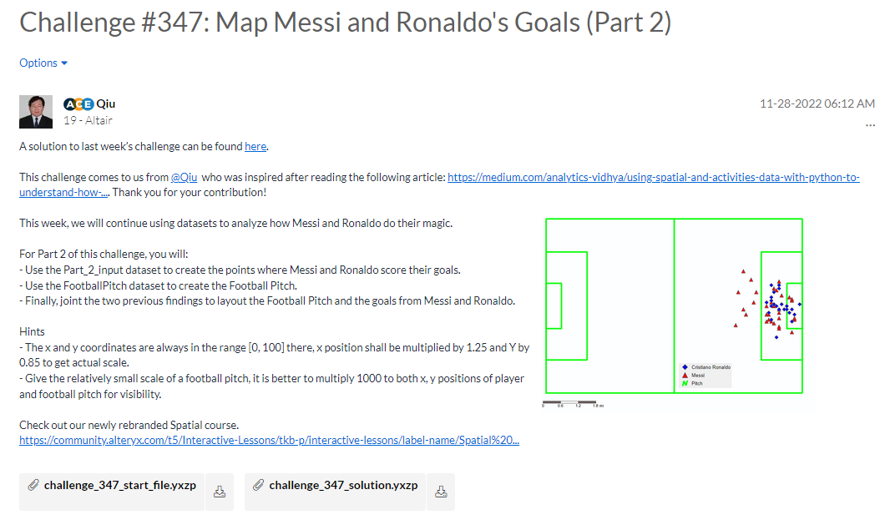
For Part 2 of this challenge, we will need to:
- Use the Part_2_input dataset to create the points where Messi and Ronaldo score their goals.
- Use the FootballPitch dataset to create the Football Pitch.
- Finally, joint the two previous findings to layout the Football Pitch and the goals from Messi and Ronaldo.
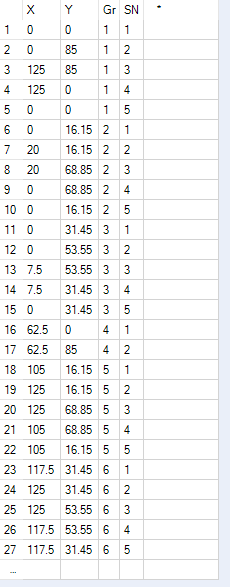
So this input file is the co-ordinates of the football pitch for the given data. Of course if you are using some external data like from opta or understat you could readjust and scale these points up and down for your own data. The group number identifys the polygon, and the SN will represent the order you join the points up in.
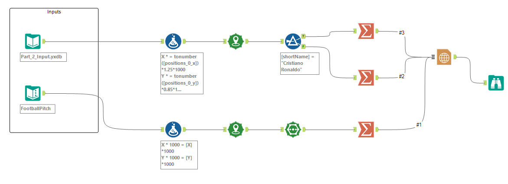
Above is the flow we will use to create our final shot map. Lets take it step by step. First we rescale our points to make easier to visualise.
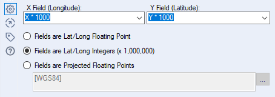
We then use the create points functionality to be able to plot the latitude and longitude. Essentially our x and y values. We make sure to use the second option on the drop down to allow for x and y points that go beyond a typical maps limitations.
For the top stream these will be unique points for each shot. For the bottom part of the stream these will be identifying points to plot to draw our football pitch.
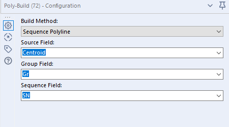
The polybuild function helps us then draw the pitch. We take our input of the centroid (i.e our mapped x and y co-ordinates) and draw a sequence polyline, grouping on the group field and joining those lines up in the order of the SN field. It is important to remember to make the build method a polyline instead of polygon or convex hull!
By adding in the browse we can see how this creates our pitch.
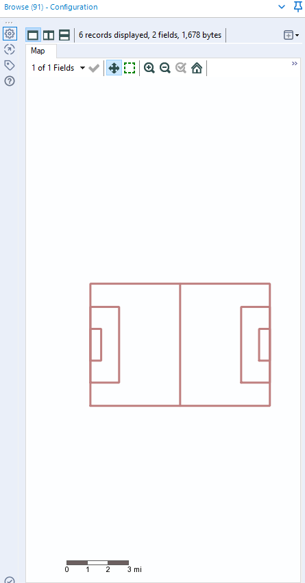
We can essentially flatten these lines into one using the combine field.
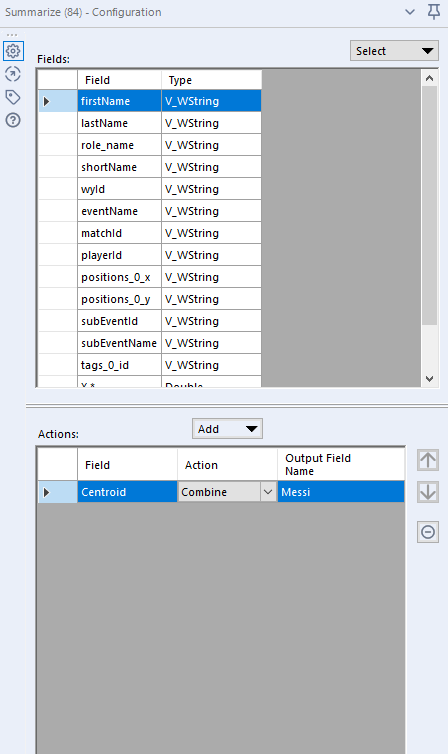
The final thing we want to do in the top half of the screen is to split the data out, one for Messi and one for Ronaldo.
Finally we will look to use the report map configuration to be able to showcase our final shot map!
Things to note include:
Adding in the incoming data fields. This will include Messi, Ronaldo shots and the background pitch.
Adding in Layers, You'll notice that we can change the shape for each player, given we split them out as well as assign them there own colour encoding.
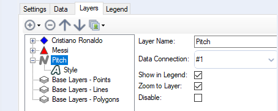
And there we have, if we run our workflow and add the browse tool we can see these marks drawn in Alteryx.
Maybe not the most aesthetically appealing design we have ever seen, but a good challenge to complete all within Alteryx. Maybe we will look if we can emulate some of the other blogs within Alteryx too!
Once again, a massive thank you to Faris for leading the session and the team for their engagement with this challenge. We had some great inputs from Filip Rutkowskitoo on configuring the final mapping tools.
Going Further:
Apply the logic to your own dataset
Create a different type of football pitch metrics chosen from MPLSoccer website
Play around with the colours, layers and pitch details
Try showcase a match with shots on both sides of the pitch.
 Maybe not the most aesthetically appealing design we have ever seen, but a good challenge to complete all within Alteryx. Maybe we will look if we can emulate some of the other blogs within Alteryx too!
Once again, a massive thank you to Faris for leading the session and the team for their engagement with this challenge. We had some great inputs from Filip Rutkowski too on configuring the final mapping tools.
Going Further:
Maybe not the most aesthetically appealing design we have ever seen, but a good challenge to complete all within Alteryx. Maybe we will look if we can emulate some of the other blogs within Alteryx too!
Once again, a massive thank you to Faris for leading the session and the team for their engagement with this challenge. We had some great inputs from Filip Rutkowski too on configuring the final mapping tools.
Going Further: